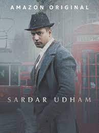

Historical Movies

Sardar Udham
Based on the life of Udham Singh,
a freedom fighter from Punjab who assassinated
Michael O'Dwyer in London to avenge the 1919
Jallianwala Bagh massacre in Amritsar.

Lagaan: Once upon a time in India
Set in 1893, during the late Victorian period of India's colonial British Raj, the film follows the inhabitants of a village in Central India, who, burdened by high taxes and several years of drought, are challenged by an arrogant British Indian Army officer to a game of cricket as a wager to avoid paying the taxes they owe. The villagers face the arduous task of learning a game that is alien to them and play for a victory.